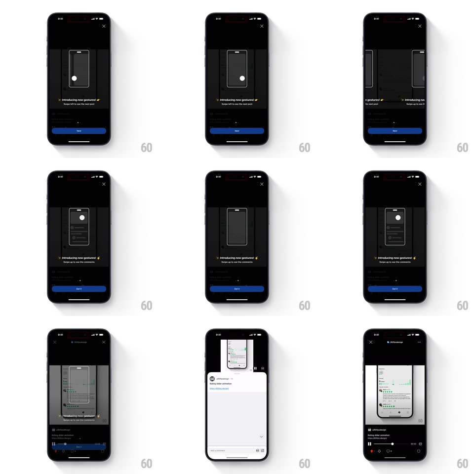

Media
Frame-by-frame

Rebuild this interaction 1:1: Reddit's gestures popup - a dark onboarding sheet with an animated phone illustration demonstrates each new gesture ("Swipe left to see the next post", "Swipe up to see the comments") across paged steps, then hands off to the real gesture-driven feed.

Rebuild this interaction 1:1: Reddit's gestures popup - a dark onboarding sheet with an animated phone illustration demonstrates each new gesture ("Swipe left to see the next post", "Swipe up to see the comments") across paged steps, then hands off to the real gesture-driven feed.
## Integration
Integration: stack-agnostic spec - springs given as stiffness/damping, timed motions as duration + curve; map every value to your framework and animation library of choice.
## Scene
A dark sheet over the dimmed feed: X close top-right, a phone outline illustration center, the headline "Introducing new gestures!" with a wave emoji, a caption line per step, a page dot indicator, and a blue pill button (Next on step 1, Got it on the last).
## Motion spec
Pattern: paged animated illustration walkthrough.
- Sheet rises over the dimmed feed (spring ~340/24, 350ms).
- Each step's illustration loops: a white dot (the finger) drags across the phone outline - left-swipe on step 1 (dot starts center, moves left with the phone's content sliding with it, 900ms loop with a 600ms pause), swipe-up on step 2 (dot pulls content up revealing a comments sheet inside the illustration).
- Next advances: old caption + illustration slide left and fade (200ms), new pair slides in from the right (250ms, ease-out); the page dot slides.
- Got it: the sheet slides down (280ms, ease-in) and the real feed appears - the first actual swipe works exactly as demonstrated (horizontal swipe slides the post out left and brings the next, spring-settled).
## Calibration
- The dot's drag has a press-in beat first (scale 1 -> 0.8 -> 1, 150ms) - it reads as a touch, not a cursor.
- Two steps only - the loop pacing is identical on both.
## Reduced motion
Illustrations are static frames with the dot at mid-gesture.
## Don't miss
- The illustration phone shows real mini content (post lines, comments) - not an empty rectangle.
- The demo's swipe direction matches the real gesture 1:1 - the popup is rehearsal for the very next interaction.